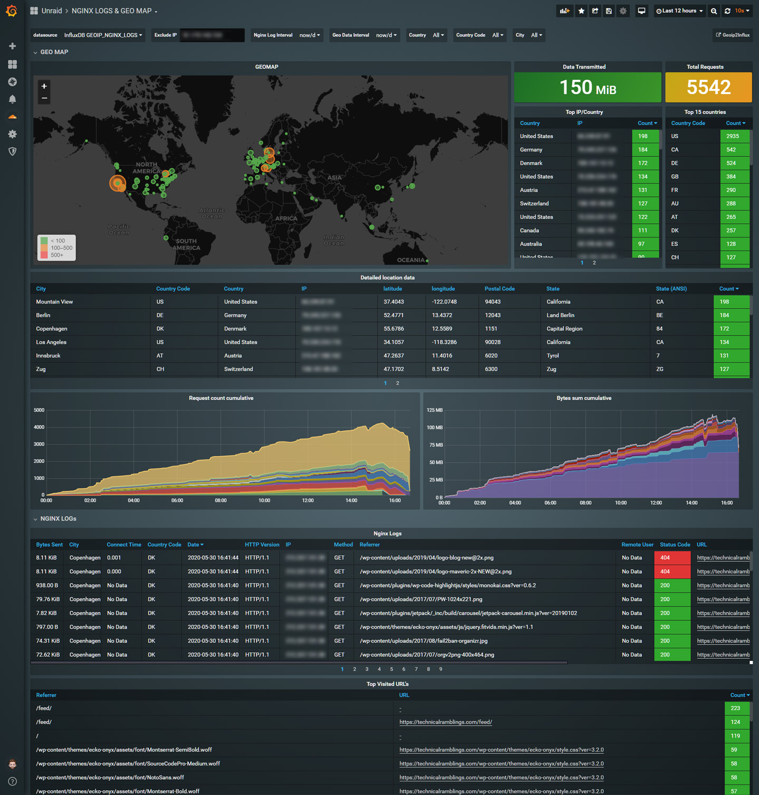

Visualizing Nginx geo data metrics with Python, InfluxDB and Grafana¶
Written: 2020-05-13
Tags
Category

A couple of weeks ago I saw someone posted an article on on the LinuxServer discord describing how to send geo data statistics from Nginx to InfluxDB. I have seen similar articles in the past and I always wanted to try it out, and because adding new dashboards to Grafana is always fun :)
Note
For people not using the letsencrypt/swag container, I've added a standalone container you can use here: https://github.com/gilbN/ geoip2influx
The article was a couple of years old so he was using the now deprecated maxmind geoip database. But the rest of the Nginx configs looked just fine. As for the sending of the geo data metrics to InfluxDB, he was using a python2 script.
Having recently started using Roxedus's Fail2Ban docker mod for the linuxserver swag container, I thought that would be an excellent way of running it. So I looked at how Roxedus set up his mod and used that as a template for building mine.
Getting the script to work was simple enough, I just needed to adapt it for python3 and change a couple of small things, like adding environment variables for use with docker.
I also tried to get Telegraf to parse the Nginx logs like he did in his guide, but it only parsed the logs once and didn't continue to send new log lines to InfluxDB. So I decided to make python parse it instead.
Adding the docker mod to the swag container¶
Influx version
Only InfluxDB v1.8.x supported!
The mod is added using docker environment variables.
The first one you need is -e DOCKER_MODS=linuxserver/mods:swag-geoip2influx
Here is a link to the repo if you want to have a look: https://github.com/gilbN/lsio-docker-mods/blob/master/letsencrypt/geoip2-nginx-stats Update 06.09.2020: I made a PR on the official linuxserver/docker-mods repo, and it' now been added there. https://github.com/linuxserver/docker-mods/tree/swag-geoip2influx
The python script has some default variables added already, so you only need to add the ones that's different for your system.
The available and default variables are:
-e NGINX_LOG_PATH=/config/log/nginx/access.log
-e INFLUX_HOST=localhost
-e INFLUX_HOST_PORT=8086
-e INFLUX_DATABASE=geoip2influx
-e INFLUX_USER=root
-e INFLUX_PASS=root
-e INFLUX_RETENTION=7d
-e INFLUX_SHARD=2d
-e GEO_MEASUREMENT=geoip2influx
-e LOG_MEASUREMENT=nginx_access_logs
-e SEND_NGINX_LOGS=true
-e GEOIP2INFLUX_LOG_LEVEL=INFO
-e GEOIP2INFLUX_LOG_PATH=/config/log/geoip2influx/geoip2influx.log
Most of them should be self explanatory, so I'll just add some comments on a couple of them.
-e INFLUX_HOST=localhost Since you will be setting this up inside the swag container, the default value will not work unless you are running the container with host networking and InfluxDB is installed on the same host. So change this to your host IP/docker dns name.
GEO_MEASUREMENT=geoip2influx and -e LOG_MEASUREMENT=nginx_access_logs
These are just the measurement names that will be sent to InfluxDB.
-e INFLUX_DATABASE=geoip2influx
The database will be created automatically by the python script, so no need to create one beforehand.
-e INFLUX_RETENTION and -e INFLUX_SHARD
Update 06.06.20: To try and mitigate max-values-per-tag limit exceeded errors I've added retention to the database. It will only add the retention policy if the database doesn't exist. Read more about retention policies here: https://www.influxdata.com/blog/influxdb-shards-retention-policies/ and https://docs.influxdata.com/influxdb/v1.2/concepts/key_concepts/#retention-policy
-e MAXMINDDB_LICENSE_KEY=<license-key>
Update 15.05.20: The swag container now natively supports downloading the geoip2 database with the use of the MAXMINDDB_LICENSE_KEY variable.
Add your MaxMind Geoip2 license key and it will automatically download the latest database and update it weekly . The default download location is /config/geoip2db/GeoLite2-City.mmdb.
If you're unsure how to obtain a licensekey, check out the first part of my geolite2 guide.
-e GEOIP2INFLUX_LOG_LEVEL=INFO
The script will automatically create a log file in the directory that -e GEOIP2INFLUX_LOG_PATH is set to. Set this to DEBUG for troubleshooting.
Nginx log metrics¶
swag geolite2 instructions: https://technicalramblings.com/blog/blocking-countries-with-geolite2-using-the-letsencrypt-docker-container/
For python to be able to parse the nginx logs correctly you need to update your nginx configs with a couple of lines.
- Add the following in the http block in your
nginx.conffile:
geoip2 /config/geoip2db/GeoLite2-City.mmdb {
auto_reload 5m;
$geoip2_data_country_iso_code country iso_code;
$geoip2_data_city_name city names en;
}
log_format custom '$remote_addr - $remote_user [$time_local]'
'"$request" $status $body_bytes_sent'
'"$http_referer" $host "$http_user_agent"'
'"$request_time" "$upstream_connect_time"'
'"$geoip2_data_city_name" "$geoip2_data_country_iso_code"';
- Set the access log use the custom log format.
access_log /config/log/nginx/access.log custom;
The first time the scripts starts it will try and parse the log for 1 minute and if the regex doesn't match it will disable the log metrics. So be sure to refresh your site a couple of times after adding the mod.
Next add a new datasource to Grafana with the name of the database you chose and import the dashboard and you should start seeing the map getting populated!
Multiple log files¶
If you separate your nginx log files but want this mod to parse all of them you can do the following:
As nginx can have multipleaccess logdirectives in a block, just add another one in the server block.
Example¶
access_log /config/log/nginx/technicalramblings/access.log custom;
access_log /config/log/nginx/access.log custom;
This will log the same lines to both files.
Then use the/config/log/nginx/access.logfile in theNGINX_LOG_PATHvariable.
Grafana dashboard¶
Here is the link to the Grafana dashboard: https://grafana.com/grafana/dashboards/12268
Other statistics¶
You can also add a Telegraf plugin for Nginx that gets some extra stats from the webserver.
https://github.com/influxdata/telegraf/tree/master/plugins/inputs/nginx
Location Block:
location /nginx_status {
stub_status on;
access_log off;
allow 192.168.1.0/24; # Add the IP ranges you want to access.
deny all;
}
Sources: https://medium.com/faun/total-nginx-monitoring-with-application-performance-and-a-bit-more-using-8fc6d731051b https://geoip2.readthedocs.io/en/latest/ https://www.influxdata.com/blog/getting-started-python-influxdb/ https://grafana.com/grafana/dashboards/8522 https://www.geeksforgeeks.org/python-reading-last-n-lines-of-a-file/
If you need any extra help join the Discord server¶